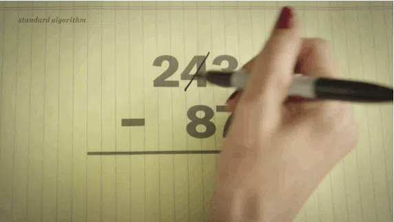
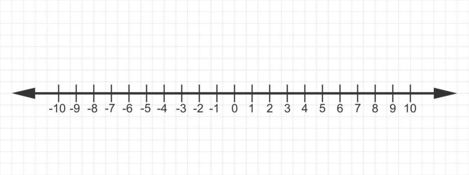

There are 4 basic arithmetic operations. They are:
See if you can solve the problems below. Click the check answers button to see if you got it correct.
Integers are whole number that can be positive, negative, or zero, but does not include any fractional or decimal parts.
Sometimes, you will not have a situation where you can simply just perform basic arithmetic. You will come across problems where you will be required to follow rules. These problems are problems where you will not always get a positive number.

Do you think the numbers below are positive or negative?
| Operation | Rule | Example | Explanation | Result |
|---|---|---|---|---|
| Addition (+) | Same signs: Add numbers and keep the sign | -5 + (-3) = -8 | Both numbers are negative, so add 5 + 3 and keep the negative sign. | Negative |
| Addition (+) | Different signs: Subtract and keep the sign of the larger number | 8 + (-3) = 5 | Subtract 8 - 3. Since 8 is positive, the answer is positive. | Positive |
| Subtraction (-) | Change subtraction into addition of the opposite | 5 - (-2) = 5 + 2 which is 7. | Two negatives become a positive, then add the numbers. | Positive |
| Multiplication (×) | Same signs: Positive. Different signs: Negative. | -4 × -3 = 12 | Both numbers have the same sign, so the answer is positive. | Positive |
| Division (÷) | Same signs: Positive. Different signs: Negative. | -12 ÷ 3 = -4 | The numbers have different signs, so the answer is negative. | Negative |
Using the rules and examples above, try to solve the following problems. Click on the "Check Answer" button to see if your answer is correct.
Test your knowledge of basic arithmetic by taking the quiz below. Good luck!